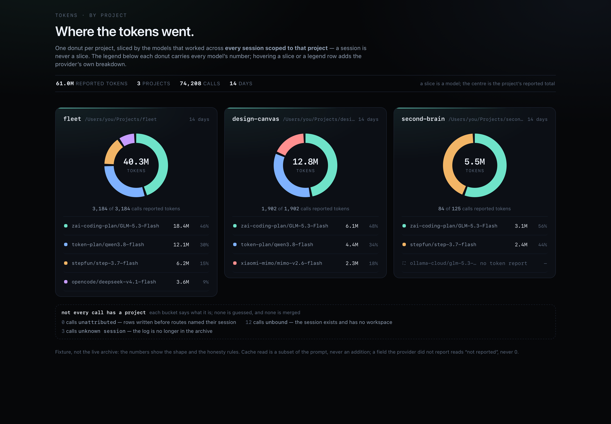
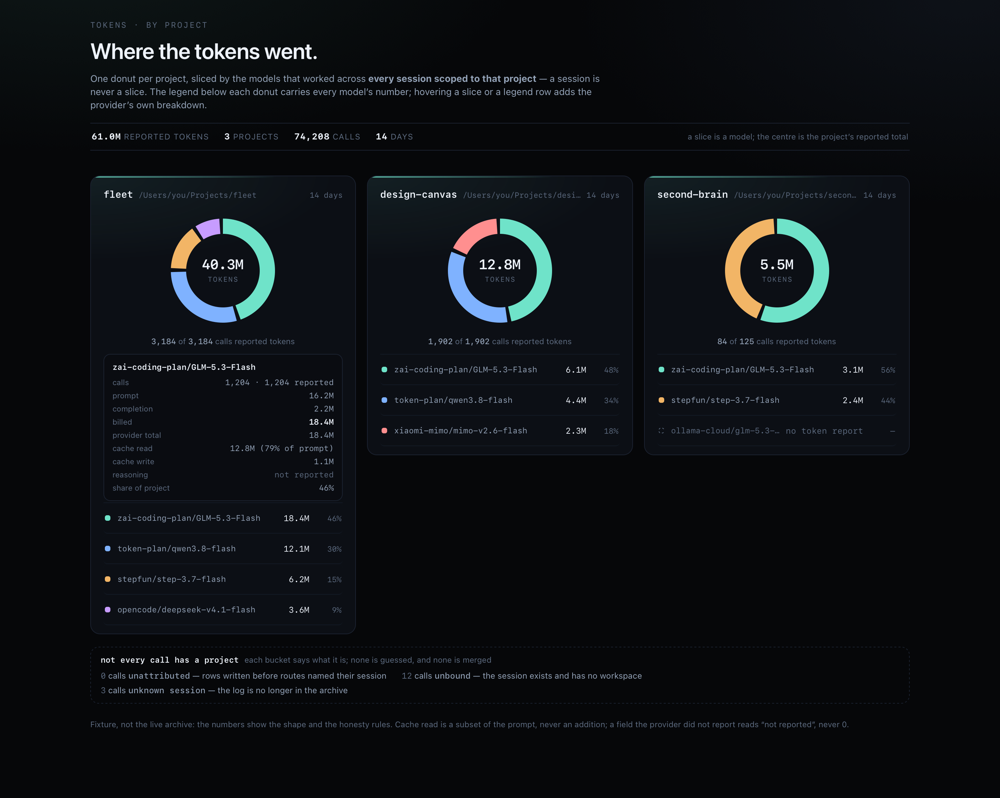
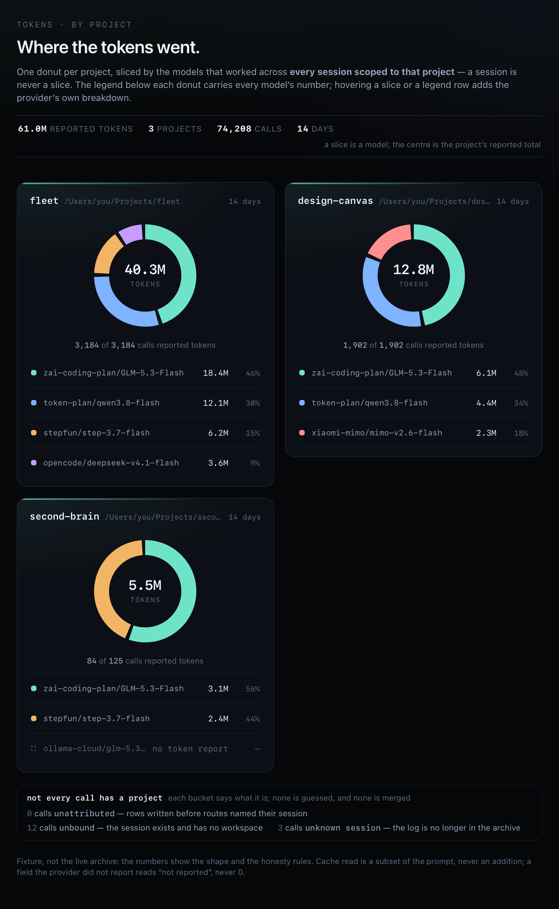
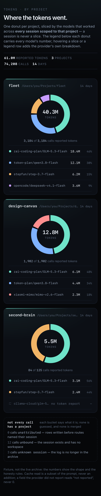

Already answered by the owner: the donut is per project, composed across all sessions scoped to that project; a project card carries the donut with a legend below it; the slice metric is billed tokens (prompt + completion — cache read is a subset, never a slice); a field the provider did not report reads “not reported”, never 0.
Still the gate’s: the card density and order at 1440/820/390 (this draws three across, two, one, ordered by billed tokens); and whether the three buckets are a footnote strip (drawn) or cards of their own.